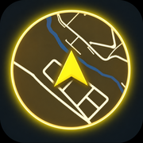

→EN

Sensor Challenge
「Sensor Challenge（センサーチャレンジ）」をしっかり楽しみたい方は、ホーム画面への追加（全画面アプリ起動）をおこなってください。
1
ブラウザ下部の「共有（四角と矢印）」をタップ
2
メニューから「ホーム画面に追加」を選択
3
ホーム画面に生成されたアイコンから起動
ブラウザのままテスト起動（記録は一時的になります）
→EN
安全にお楽しみいただくために
「Sensor Challenge（センサーチャレンジ）」をプレイする際は、交通ルールを遵守し、周囲の安全に十分注意しながらお楽しみください。
OK
©
OpenMapTiles
· ©
OpenStreetMap contributors
· Powered by
Geoapify
→EN
DISCOVERY COMPLETED
チャレンジ一覧
✕
試練の祠・探索チャレンジ（仮）
タップしてチャレンジ図鑑一覧へ
▶
チャレンジ一覧
チャレンジ図鑑一覧
指定ターゲットA（仮）
タップして図鑑詳細へ
方位を許可 · タップ
地図を読み込めません / Map unavailable
✕
RADIUS
3km
200m
1km
3km
10km
50km
SET
[対象: 未設定 / 範囲: 3km]
未踏:
--
件探知中
STANDBY
--
SENSOR: STANDBY
｜
RANDOM LOCK
｜
NORMAL SENS
▼
SOUND VOLUME
▲
｜
CONTINUOUS
｜
for HEADPHONE
｜
KEEP SCREEN ON
探索履歴一覧
✕
検索日時順
到達日時順
到達件数降順
到達0件の履歴を一括削除
図鑑一覧
✕
現在地から近い順
到達日時が新しい順
到達日時が古い順
名称あいうえお順
探索履歴一覧
履歴図鑑一覧
✕
現在地から近い順
到達日時が新しい順
到達日時が古い順
名称あいうえお順
このキーワードの履歴を一括削除
戻る
図鑑詳細
--
--
--
--
SET
レーダーON
コピー
削除
スポット地図
地図を準備中...